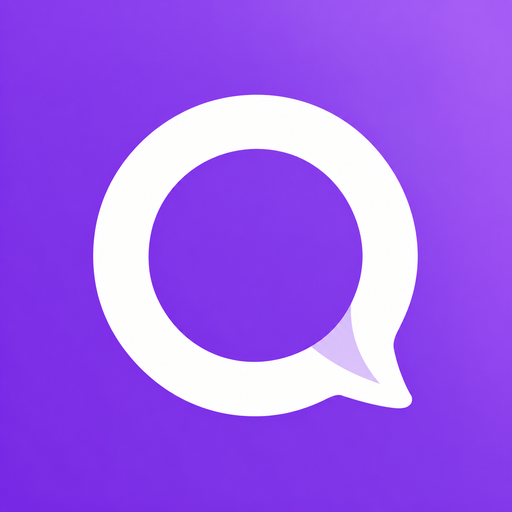

OwnLingoPrivacy policy
OwnLingo is made by Hovanapps. Questions about privacy: hovanapps@gmail.com.
In short
OwnLingo has no account, no ads and no analytics, and Hovanapps runs no server for it. We never receive what you type. Text leaves your phone only when you use AI translation with your own OpenAI key, and then it goes straight to OpenAI.
The keyboard
Like every keyboard, the OwnLingo keyboard receives what you type. It reads the message in the current text field only to translate it and to replace it with the translation when you ask. It does not record keystrokes and keeps no history of your messages. Translation is switched off in password fields and in fields that ask keyboards not to learn from the text.
Offline translation
Offline translation uses Google ML Kit on your phone. The language model (about 30 MB) is downloaded from Google once; after that, translating happens on the phone. Under its own terms, ML Kit may send Google limited technical information about its use, not the text you translate.
AI translation with your own key (optional)
If you add your own OpenAI API key, AI features send text directly from your phone to OpenAI (api.openai.com):
- AI translation: the current message, when you press the button, or after a short pause in typing if you turn on automatic AI translation.
- Translating copied text: the copied text, when you press the button.
- Explanations and answer checks while practising: the saved sentence, its translation and your answer.
- Saving one word: that word, to look up its meaning.
- Adding or editing a phrase in the app: the sentence, when you press AI translate.
OpenAI processes this text under its own privacy policy and API terms; requests are sent with storage of the response turned off. You pay OpenAI for this use from your own account. Your key is encrypted with the Android Keystore and kept only on this phone. You can delete it at any time in the app's AI settings.
Clipboard
The keyboard shows the last three texts you copied so you can paste them again. They are kept only in memory while the keyboard runs and are never saved. Copies marked as sensitive (for example by a password manager) are skipped.
Microphone and voice
The microphone is used only when you start dictation while practising. Speech is recognised by your phone's speech recognition service, which may process the audio over the internet according to that service's terms. Reading sentences aloud uses your phone's text-to-speech.
What is stored, and where
- The phrases you save, their translations, explanations, collections and practice progress.
- Your settings (languages, keyboard look, reminder time, AI model).
All of this stays in OwnLingo's private storage on your phone. It is not backed up to the cloud and not shared with anyone, including us. If you export a backup, the file is saved where you choose and is not encrypted.
Notifications and widget
The optional learning reminder and the home-screen widget show only counts (for example how many phrases are ready to practise), never your sentences.
Your control
You can switch to another keyboard, remove the OpenAI key or turn off reminders at any time. Clearing OwnLingo's data or uninstalling it deletes everything it stored on the phone. OwnLingo is not directed at children under 13.
Last updated: 15 November 2026
Zásady ochrany súkromia
OwnLingo vytvára Hovanapps. Otázky o súkromí: hovanapps@gmail.com.
Stručne
OwnLingo nemá účet, reklamy ani analytiku a Hovanapps preň neprevádzkuje žiadny server. To, čo píšeš, k nám nikdy nepríde. Text opustí telefón, len keď použiješ AI preklad s vlastným kľúčom OpenAI, a vtedy ide priamo do OpenAI.
Klávesnica
Ako každá klávesnica, aj klávesnica OwnLingo dostáva to, čo píšeš. Správu v aktuálnom textovom poli číta len preto, aby ju preložila a na tvoju žiadosť nahradila prekladom. Nezaznamenáva stlačenia klávesov a nevytvára históriu správ. V poliach na heslá a v poliach, ktoré klávesniciam zakazujú učiť sa z textu, je preklad vypnutý.
Offline preklad
Offline preklad používa Google ML Kit v telefóne. Jazykový model (približne 30 MB) sa raz stiahne od Googlu, potom sa prekladá priamo v telefóne. Podľa svojich podmienok môže ML Kit posielať Googlu obmedzené technické údaje o používaní, nie text, ktorý prekladáš.
AI preklad s vlastným kľúčom (voliteľné)
Ak zadáš vlastný API kľúč OpenAI, AI funkcie posielajú text priamo z telefónu do OpenAI (api.openai.com):
- AI preklad: aktuálnu správu, keď stlačíš tlačidlo, alebo po krátkej pauze v písaní, ak zapneš automatický AI preklad.
- Preklad skopírovaného textu: skopírovaný text, keď stlačíš tlačidlo.
- Vysvetlenia a kontrola odpovedí pri precvičovaní: uloženú vetu, jej preklad a tvoju odpoveď.
- Uloženie jedného slova: to slovo, aby sa zistil jeho význam.
- Pridanie alebo úprava frázy v aplikácii: vetu, keď stlačíš AI preklad.
OpenAI tento text spracúva podľa svojich zásad ochrany súkromia a podmienok API; požiadavky sa posielajú s vypnutým ukladaním odpovede. Za toto použitie platíš OpenAI zo svojho účtu. Kľúč je zašifrovaný pomocou Android Keystore a uložený len v tomto telefóne. Kedykoľvek ho vymažeš v nastaveniach AI v aplikácii.
Schránka
Klávesnica zobrazuje posledné tri skopírované texty, aby si ich mohol znova vložiť. Drží ich len v pamäti, kým beží, a nikdy ich neukladá. Kópie označené ako citlivé (napríklad zo správcu hesiel) vynecháva.
Mikrofón a hlas
Mikrofón sa používa, len keď pri precvičovaní spustíš diktovanie. Reč rozpoznáva služba rozpoznávania reči v telefóne, ktorá môže zvuk spracovať cez internet podľa svojich podmienok. Čítanie viet nahlas používa prevod textu na reč v telefóne.
Čo sa ukladá a kde
- Frázy, ktoré si uložíš, ich preklady, vysvetlenia, kolekcie a pokrok v precvičovaní.
- Tvoje nastavenia (jazyky, vzhľad klávesnice, čas pripomienky, AI model).
Všetko zostáva v súkromnom úložisku OwnLingo v tvojom telefóne. Nezálohuje sa do cloudu a s nikým sa nezdieľa, ani s nami. Ak vyexportuješ zálohu, súbor sa uloží tam, kam si vyberieš, a nie je šifrovaný.
Upozornenia a widget
Voliteľná pripomienka učenia a widget na ploche zobrazujú len počty (napríklad koľko fráz je pripravených na precvičenie), nikdy tvoje vety.
Máš to pod kontrolou
Kedykoľvek môžeš prepnúť na inú klávesnicu, vymazať kľúč OpenAI alebo vypnúť pripomienky. Vymazaním dát OwnLingo alebo jeho odinštalovaním sa zmaže všetko, čo uložil v telefóne. OwnLingo nie je určený deťom mladším ako 13 rokov.
Posledná úprava: 15. novembra 2026
Zásady ochrany soukromí
OwnLingo vytváří Hovanapps. Dotazy k soukromí: hovanapps@gmail.com.
Stručně
OwnLingo nemá účet, reklamy ani analytiku a Hovanapps pro něj neprovozuje žádný server. To, co píšeš, k nám nikdy nepřijde. Text opustí telefon, jen když použiješ AI překlad s vlastním klíčem OpenAI, a tehdy jde přímo do OpenAI.
Klávesnice
Jako každá klávesnice i klávesnice OwnLingo dostává to, co píšeš. Zprávu v aktuálním textovém poli čte jen proto, aby ji přeložila a na tvou žádost nahradila překladem. Nezaznamenává stisky kláves a nevytváří historii zpráv. V polích pro hesla a v polích, která klávesnicím zakazují učit se z textu, je překlad vypnutý.
Offline překlad
Offline překlad používá Google ML Kit v telefonu. Jazykový model (přibližně 30 MB) se jednou stáhne od Googlu, potom se překládá přímo v telefonu. Podle svých podmínek může ML Kit posílat Googlu omezené technické údaje o používání, ne text, který překládáš.
AI překlad s vlastním klíčem (volitelné)
Pokud zadáš vlastní API klíč OpenAI, AI funkce posílají text přímo z telefonu do OpenAI (api.openai.com):
- AI překlad: aktuální zprávu, když stiskneš tlačítko, nebo po krátké pauze v psaní, pokud zapneš automatický AI překlad.
- Překlad zkopírovaného textu: zkopírovaný text, když stiskneš tlačítko.
- Vysvětlení a kontrola odpovědí při procvičování: uloženou větu, její překlad a tvou odpověď.
- Uložení jednoho slova: to slovo, aby se zjistil jeho význam.
- Přidání nebo úprava fráze v aplikaci: větu, když stiskneš AI překlad.
OpenAI tento text zpracovává podle svých zásad ochrany soukromí a podmínek API; požadavky se posílají s vypnutým ukládáním odpovědi. Za toto použití platíš OpenAI ze svého účtu. Klíč je zašifrovaný pomocí Android Keystore a uložený jen v tomto telefonu. Kdykoli ho smažeš v nastavení AI v aplikaci.
Schránka
Klávesnice zobrazuje poslední tři zkopírované texty, abys je mohl znovu vložit. Drží je jen v paměti, dokud běží, a nikdy je neukládá. Kopie označené jako citlivé (například ze správce hesel) vynechává.
Mikrofon a hlas
Mikrofon se používá, jen když při procvičování spustíš diktování. Řeč rozpoznává služba rozpoznávání řeči v telefonu, která může zvuk zpracovat přes internet podle svých podmínek. Čtení vět nahlas používá převod textu na řeč v telefonu.
Co se ukládá a kde
- Fráze, které si uložíš, jejich překlady, vysvětlení, kolekce a pokrok v procvičování.
- Tvoje nastavení (jazyky, vzhled klávesnice, čas připomínky, AI model).
Vše zůstává v soukromém úložišti OwnLingo v tvém telefonu. Nezálohuje se do cloudu a s nikým se nesdílí, ani s námi. Pokud vyexportuješ zálohu, soubor se uloží tam, kam si vybereš, a není šifrovaný.
Oznámení a widget
Volitelná připomínka učení a widget na ploše zobrazují jen počty (například kolik frází je připravených k procvičení), nikdy tvé věty.
Máš to pod kontrolou
Kdykoli můžeš přepnout na jinou klávesnici, smazat klíč OpenAI nebo vypnout připomínky. Smazáním dat OwnLingo nebo jeho odinstalováním se smaže vše, co uložil v telefonu. OwnLingo není určen dětem mladším 13 let.
Poslední úprava: 15. listopadu 2026